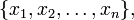
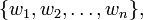
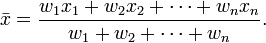

Due: Friday, November 8th at 5:00 PM, as many problems as you can complete by working
6 hours total (reading, looking up on the internet, coding, talking to tutors).
This approach is known as timeboxing
and requires you to develop some self-discipline and self-knowledge.
Submit your work via GitHub.
Files to turn in: election.py, reflection.txt.
In this assignment, you will practice the use of data structures such as lists, dictionaries, and sets. Don't panic: this assignment has many problems. You are not expected to complete them all. Continue working on them up until the due date, and submit what you have. Commit problems incrementally, even before they are completely finished. See the submission section for information about tagging.
Contents:
In the past, the outcome of political campaigns was predicted by political analysts and pundits, using a combination of their experience, intuition, and personal biases and preferences. In recent decades there has been a shift to a more scientific approach, in which election results are predicted statistically using a poll. A small random sample of voters is asked how they will vote, and from that the result of the entire election is extrapolated.
The 2012 presidential election was a watershed in the fight between pundits and statisticians. The rivalry became front-page news, with many pundits loudly proclaiming that the statisticians would be humiliated on November 6. In fact, the opposite happened: statistician Nate Silver (of the website FiveThirtyEight) correctly predicted the outcome in every state, whereas pundits' predictions varied significantly. Literally dozens of prominent political analysts had predicted a Romney win. Other pundits said the election was “too close to call”, though Silver and other statisticians had been predicting an Obama win for months. These results changed the way many Americans view political commentators, revealing them as entertainers but not as reliable sources of information.
How did Nate Silver do it? In this assignment, you will find out, and you will replicate his results by using polling data to predict the outcome of the 2012 US presidential election.
An election poll is a survey that asks a small sample of voters how they plan to vote. If the sample of voters is representative of the voting population at large, then the poll predicts the result of the entire election. In practice, a poll's prediction must be taken with a grain of salt, because the sample is only approximately representative of the voting population. (See below for an explanation of why.)
For example, in late October 2012, the Gallup poll consistently gave Romney a 6-percentage-point lead in the popular vote, but in fact Obama won the popular vote by 2.6 percentage points. On the other hand, RAND Corporation was biased toward the Democrats and tended to overstate Obama's lead by 1.5 percentage points. How can you decide which polls to rely upon? Depending on which poll you trust, you might make a very different prediction.
One approach is to average together the different polls. This is better than trusting any one of them, but it is still rather crude. What if most of them are biased? That was the case for the 23 organizations that conducted at least 5 polls in the last 21 days of the 2012 Presidential campaign: 19 of the 23 organizations gave a result that favored Republicans more than the actual results did. Nonetheless, Nate Silver's prediction was very close to correct, and showed no bias toward either party.
Silver's approach is very sophisticated, but its key idea is to combine different polls using a weighted average. In a normal average, each data point contributes equally to the result. In a weighted average, some data points contribute more than others. Silver examined how well each polling organization had predicted previous elections, and then weighted their polls according to their accuracy: more biased pollsters had less effect on the weighted average.
The general structure of FiveThirtyEight's algorithm is:
The algorithm is described in more detail at the FiveThirtyEight blog. You do not have to read or understand this information to complete this assignment, but you may find it interesting nonetheless.
We have given you an implementation of the electoral_college_outcome function, so this section is for your information but you do not need it while writing code for your assignment.
Here is information about US Presidential elections and the US Electoral College, paraphrased from Wikipedia:
The President of the United States is not elected directly by the voters. Instead, the President is elected indirectly by “electors” who are selected by popular vote on a state-by-state basis. Each state has as many electors as members of Congress. There are 538 electors, based on Congress having 435 representatives and 100 senators, plus three electors from the District of Columbia.
Electors are selected on a “winner-take-all” basis. That is, all electoral votes go to the presidential candidate who wins the most votes in the state. (Actually, Maine and Nebraska use a slightly different method, but for simplicity in this assignment, we will assume they use the “winner-take-all” approach.)
Our analysis only considers the Democratic and Republican political parties. This is a reasonable simplification, since a third-party candidate has received an electoral vote only once in the past 60 years (in 1968, George Wallace won 8% of the electoral vote).
This section of the handout explains why poll results are only approximate, and how poll aggregation helps.
Recall that a poll sample is only approximately representative of the voting population. There are two reasons for this: sampling error and pollster bias.
Sampling error is unavoidable, but it can be reduced by increasing the sample size. This is one reason that poll aggregation can be successful: it effectively uses a larger sample than any one individual poll.
In this assignment, you will write a Python program that predicts the outcome of the 2012 US Presidential election, based on polling data and results from the 2012 and 2008 elections. The overall program has already been designed, including deciding the names and specifications of all the functions and implementing some of the functions. Your job is to implement the rest of the functions. You will verify your implementation using testing code that we provide. Along the way, you will learn about Python collections.
Don't panic! This assignment might look long, but we have already done most of the work for you. You only have to implement 10 functions — and we have already written the documentation and tests for those functions, so you know exactly what to do and you know whether your solution is correct. The staff implementation of those 10 function bodies consists of only 63 lines of code in total, and 8 of the 10 functions have a body consisting of 6 or fewer lines of code. Your solution might be smaller or larger, and that is fine; we mention the size only to give you a feel for the approximate amount of code you have to write. While solving this assignment, you should expect to spend more time thinking than programming.
Hint: Before you implement any function, try describing the algorithm in English and hand-simulating it on some sample data. If you need help, ask us! You can use the Moodle forum, the chat channel, or e-mail the professor or the TA, e-mail addresses also on the course website.
Obtain the files you need: Downloading the homework5.zip file, then unzip it to create a homework5 directory/folder on your computer.
You will do your work by modifying two files — election.py and reflection.txt — and then submitting the modified versions. Add your name and Evergreen login to the top of each file.
We provide you with the following election data (in the directory homework5/data):
You do not have to open or examine any of these files. The staff has already provided you with all the code that reads files. (It's the read_csv function at the top of election.py; it uses a DictReader from Python's csv library.) You will only write functions that manipulate data structures such as lists and dictionaries.
We describe the files here for completeness, but you can skip the rest of this section if you are not interested.
Each file represents a table, in CSV format: rows are on separate lines, and columns are separated by commas. The first row in each file contains the name of each column. You can open a CSV file using or using a spreadsheet programs such as Microsoft Excel (though a spreadsheet program display the file differently than its actual contents!). Be careful not to make any changes when examining these files. (Microsoft Excel or another program might encourage you to save the files in a different format; do not do so!)
Each row in the provided polling data (2008-polls.csv and 2012-polls.csv) contains a prediction of the Democratic and Republican popular vote percentages in a single state. Each row also contains the name of the pollster that conducted the poll and the date the poll was conducted.
Each row in the provided election data (2008-results.csv and 2012-results.csv) contains the actual Democratic and Republican popular vote percentages.
Let's begin with a simple task: transforming a list of election result rows into a more elegant Python data structure: a dictionary.
Your program will represent the result of a state election in terms of the “Democratic edge”, or the difference between the Democratic and Republican popular vote percentages in that state. For example, if the Democratic candidate receives 53% of the vote (actual or predicted), and the Republican candidate receives 47% of the vote, then the Democratic edge is 6 (percentage points). A positive edge indicates a Democratic lead, and a negative edge indicates a Republican lead. The sign associated with each party is arbitrary — no positive or negative connotation is intended.
Throughout our program, we will frequently need to look up the Democratic edge (hereinafter referred to simply as “edge”) in a particular state. Instead of tediously searching through a list of election data rows to find a particular state, let us instead produce a dictionary that maps each state to its edge. The state_edges function serves this purpose. Read its documentation in the election.py file.
The docstring for state_edges (the triple-quoted text just below the function declaration) is a concise summary of its input parameters and return value, and how they relate to each other. This is known as a function's specification. On first inspection, the specification of state_edges appears too concise: What exactly do we mean by “state edges”?
To avoid confusion about the various data structures used in this assignment, we've given each structure a name, and precisely defined its purpose and representation in Python. A list of these structures can be found at the bottom of this document. There you will find a definition of “state edges”. If you become confused about the parameters or return type of a function, read its specification, and look up any unfamiliar types in the list below. Another way to better understand a given function is to examine its tests that appear in the file tests.py. Those tests don't use exactly the same data as when your program will predict the 2012 election, but they do use data of exactly the same type, and you may find the tests' small examples of input and output helpful in understanding a given function.
In election.py, implement the function state_edges. Remove these lines:
#TODO: Implement this function
pass
and replace them by your implementation. Be sure to take advantage of the provided row_to_edge function.
You do not have to read or examine the .csv files for this or any other problem in the assignment.
Uncomment the invocation of test_state_edges() near the end of file tests.py. That is, change this line:
#test_state_edges()
to this:
test_state_edges()
Then, run tests.py as a Python program. You can do this by opening tests.py in IDLE, then pressing F5 or selecting Run Module from the Run menu. (Alternately, you can type python tests.py at the command line, but using IDLE is usually more convenient.)
The file tests.py contains Python code that verifies the correctness of each function you write. Every time you finish implementing a function, you should uncomment the corresponding function call at the bottom of tests.py and run tests.py.
If your implementation is correct, then running tests.py will print “Tests passed.&rdquo If your implementation is incorrect, an error will be output; in this case, fix your implementation and re-run tests.py, until your implementation passes the tests.
The error produced if your implementation has a bug will not be very helpful. For example, suppose that you press F5 (Run Module) in IDLE and get an error such as
...
File "tests.py", line 32, in test_state_edges
assert state_edges(rows1) == {'WA': 0.9}
AssertionError
This tells you that the value returned by the method call state_edges(rows1) was not {'WA': 0.9} as it should have been, but it does not tell you what the value was. But, IDLE is now in the interpreter waiting for output, with all of your program's functions defined. You can type
state_edges( [{'State': 'WA', 'Dem': '1.0', 'Rep': '0.1'}] )
to the Python interpreter to see the exact value that the call returned. Using the Python interpreter in this way is very convenient: you can perform experiments, calling a function on whatever input you like to better understand its behavior.
Next, we turn our attention to polling data. Election sentiment ebbs and flows in the months leading up to an election, and as a result older polls are much less accurate than more recent polls. In order to prevent old poll data from unduly influencing our prediction of the 2012 election, our program will only consider the most recent poll from a pollster in a state.
Implement the function most_recent_poll_row for this purpose. We provide a function earlier_date, which compares dates formatted as strings. Make use of this function when implementing most_recent_poll_row. If you're stuck, think back to how we found the maximum element in a list. In a sense, most_recent_poll_row is finding the “maximum” of a list of dates. As with any function, if you are having any trouble, step away from IDLE, write a set of English instructions, and manually animate your algorithm on some sample data.
Don't forget to uncomment the call of test_most_recent_poll_row at the bottom of tests.py, and run the tests.
Now that we can obtain the most recent poll by a particular pollster in a particular state, we can consider how to represent polling data within Python.
An election poll has two pieces of identifying information (“keys”): a state and a pollster. Thus, our Python representation should make it easy to look up a poll given both keys. Nesting a dictionary within another dictionary is a common way to facilitate lookup with multiple keys. For example, here is a nested dictionary representation, which we call a pollster prediction:
{
"pollster1": {"WA": 10.0, "OR": 15.0},
"pollster2": {"OR": -5.0, "TX": -15.0}
}
A value can be looked up in a nested dictionary using two pairs of brackets:
edge = pollster_prediction["pollster1"]["WA"]
In the above, note that pollster_prediction["pollster1"] is a dictionary that maps each state to an edge.
Alternatively, we could reverse the keys, and nest a dictionary of pollster edges inside a dictionary of states; we call this a state prediction:
{
"WA": {"pollster1": 10.0}
"OR": {"pollster1": 15.0, "pollster2": -5.0}
"TX": {"pollster2": -15.0}
}
edge = state_prediction["WA"]["pollster1"]
In the above, note that state_prediction["WA"] is a dictionary that maps each pollster to an edge.
Each representation is better suited for different types of lookup. If you have a pollster, and you want to obtain all the state predictions associated with that pollster, the first data structure is most convenient. Conversely, if you have a state, and you want to obtain all the pollster predictions in that state, the second data structure is more convenient. Your program will use both types of nesting.
First, implement the helper function unique_column_values. This produces a collection of states and a collection of pollsters to iterate over. You will need this in order to use the most_recent_poll_row function that you previously implemented in Problem 2. As a hint, consider how different Python data structures handle duplicate elements.
Next, implement the pollster_predictions function. Its output produces the first example of nesting described in this problem. (In Problem 5, you will implement a function that transforms one nesting into another.) Your implementation of pollster_predictions will use the helper function most_recent_poll_row that you just implemented.
Don't forget to refer to the data type reference if you are unsure about what data structure to return, and don't forget to uncomment and run the tests.
Now that we can represent election results and polling data in Python, we can begin to implement Nate Silver's algorithm. A first step is to write a function that computes the rank (average error) of a pollster's predictions.
Implement the function average_error, which computes the average error of pollster edges. In each state, the error of a predicted edge is the absolute value of the difference between the predicted edge and actual edge. The average error of a collection of pollster edges is the average of these individual errors.
Hint: Not all pollsters conduct polls in every state. When computing an average error, be sure to divide by the number of states in which a pollster made a prediction, not by the total number of states.
Next, use average_error to implement the function pollster_errors. Again, refer to the data type reference below for more information about parameter and return types. Once completed, pollster_errors provides a quantitative method for measuring the accuracy of a pollster, based on their past predictions.
Recall that in Problem 3, we implemented a function that produces a pollster prediction (a nested dictionary from pollster to state to edge). This nesting was ideal when implementing pollster_errors, however future problems will require the opposite nesting. Implement and test the function pivot_nested_dict, which converts pollster predictions to state predictions.
Hint: the in operator indicates whether a dictionary contains a key.
So far, we have focused on representing election and polling data in Python, and analyzing the accuracy of predictions from past elections. Now, we look to the future!
When predicting the election result in a single state, predictions from multiple pollsters are combined using a weighted average, where a pollster's prediction is weighted according to the accuracy of its past predictions. First, implement and test the helper function weighted_average. A weighted average is defined as follows (images of formulas courtesy of Wikipedia):
For a list of items x:
and a corresponding list of weights w:
the weighted average of x is:
After implementing and testing weighted_average, use it to implement average_edge. We provide the function pollster_to_weight, which you should use to compute the weight of a pollster, based on their average error.
Finally, implement the function predict_state_edges, which predicts the result of the 2012 election in each state. Make use of the average_edge function from Problem 6.
Once your implementation predict_state_edges passes our tests, run election.py as a Python program to predict the outcome of the 2012 election! Your result should match the actual outcome of the 2012 election:
Dem 332.0 Rep 206.0
If your program passes all the tests, but does not give this answer, then please send your program to the course staff, who will create an additional test case to help you find your error.
More details about the actual election appear in file data/2012-results.csv and in the Wikipedia article on the 2012 election.
Make sure to look over election.py and tests.py for any remaining TODO comments (the find feature in IDLE works great). This should help you ensure you have completed the entire assignment.
In reflection.txt, state which students or other people (besides the course staff) helped you with the assignment, or that no one did.
In reflection.txt, reflect on this assignment. What did you learn from this assignment? What do you wish you had known before you started? What would you do differently? What advice would you offer to future students?
Submit your files in your Github repository.
Please commit your work incrementally, even if you haven't finished a problem.
This will keep a backup of your work online and let us keep track of your
progress. When you are finished with each problem and it passes the necessary tests,
commit/sync it first to
github.com, and tag it (create a release) called hw5-x for
problem x.
State: Represented as a string, consisting of a two-letter
abbreviation.
Examples: "WA", "TX"
Edge: The Democratic edge (difference between Democratic and
Republican vote percentages) in an individual state election. Represented as a
number.
Examples: 3, -5.4, 0.0
Pollster: An organization that conducts election polls.
Represented as a string (the pollster's name).
Examples: "AtlantaJournal", "SurveyUSA"
State edges: A dictionary that maps a state to
an edge. Represents the nation-wide result of an election or a poll as a collection
of edges, each corresponding to a particular state.
When it represents a poll, if a state is missing, that indicates that the
pollster did not make a prediction in that state.
Example: { "AK": -14.0, "AL": -22.3, "AR": -23.6, "AZ": -10.1, "CA": 20.9 }
Pollster edges: A dictionary that maps a
pollster to an edge. Represents a collection of predictions about
the result of an individual state election (an edge).
Example: { "MarketShares": 21, "SouthernIllinoisU": 13, "IPSOS": 26 }
Pollster predictions: A dictionary that maps
a pollster to a state edges. Represents a collection of pollsters,
each of which has a collection of per-state election predictions (a state edges).
Example:
{ "Gallup": { "WA": 7, "CA": 15, "UT": -30 },
"SurveyUSA": { "CA": 14, "CO": 2, "CT": 13, "FL": 0, "GA": -8, "KY": -14 },
"Omniscient": { "AK": -14.0, "AL": -22.3, "AR": -23.6, "AZ": -10.1, "CA": 20.9 }
}
State predictions: A dictionary that maps a
state to a pollster edges. Represents a collection of states, each
of which has a collection of predictions made about that state (a pollster edges).
Example:
{ "IL": { "MarketShares": 21, "SouthernIllinoisU": 13, "IPSOS": 26 },
"IN": { "Rasmussen": -9, "Howey": -10, "PharosResearchGroup": -13, "GlobalStrategy": -6 }
"LA": { "Zogby": -13, "SouthernMediaOpinionResearch": -6 }
}
Note that both pollster predictions and state predictions are nested dictionaries. In problem 5, we implement a function that can convert between these two types.
Pollster errors: A dictionary that maps a pollster to an average
error (a float).
Example: { "Gallup" : 6.9, "SurveyUSA" : 3, "RockyMtnPoll" : 0 }
Election data row / poll data row: A dictionary that maps a column name to a value (as a string).
An election data row has the following columns: State, Dem, Rep
Examples:
{ "State":"AK", "Dem":"41.3", "Rep":"55.3" }
{ "State":"AL", "Dem":"38.4", "Rep":"60.7" }
{ "State":"AR", "Dem":"36.9", "Rep":"60.5" }
A poll data row has the following columns: State, Dem, Rep, Date, Pollster
Examples:
{ "State": "AK", "Dem":"37", "Rep":"59", "Date":"Nov 04 2008", "Pollster":"2008Election" }
{ "State": "AL", "Dem":"36", "Rep":"54", "Date":"Aug 16 2012", "Pollster":"CapitalSurvey" }
{ "State": "AL", "Dem":"36", "Rep":"51", "Date":"Jun 27 2012", "Pollster":"CapitalSurvey" }